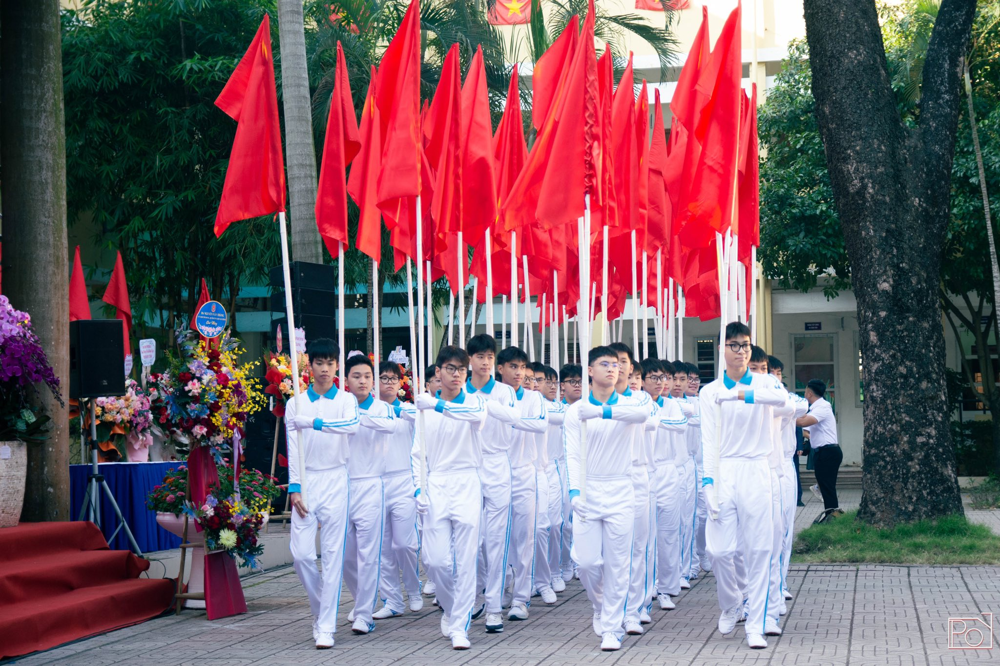
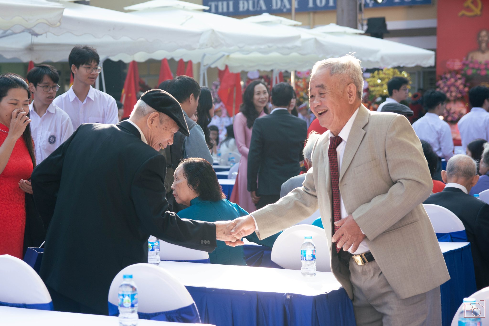
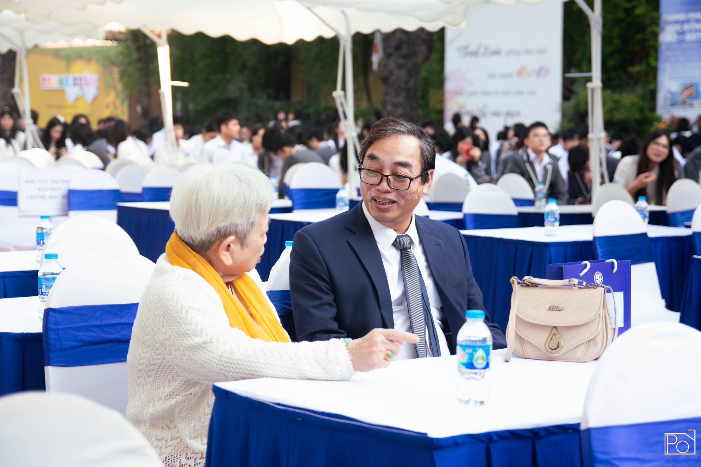
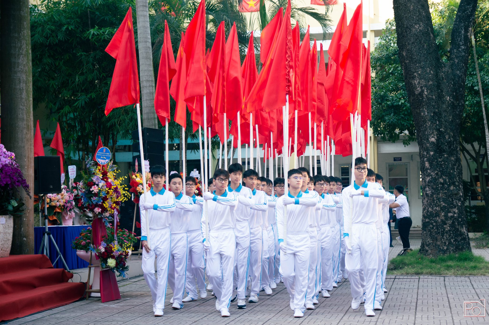
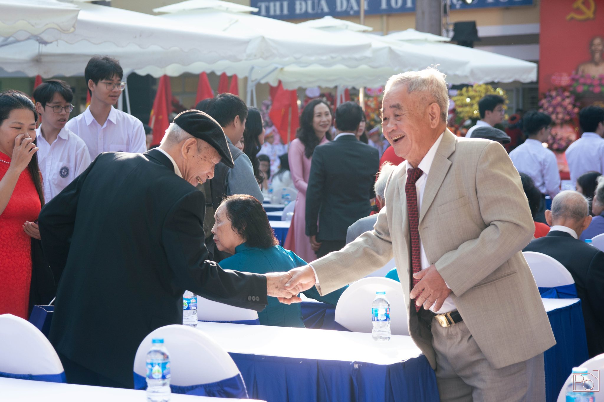
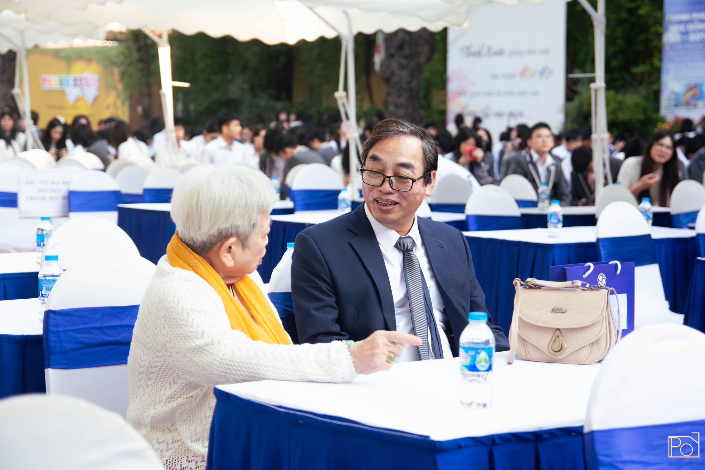
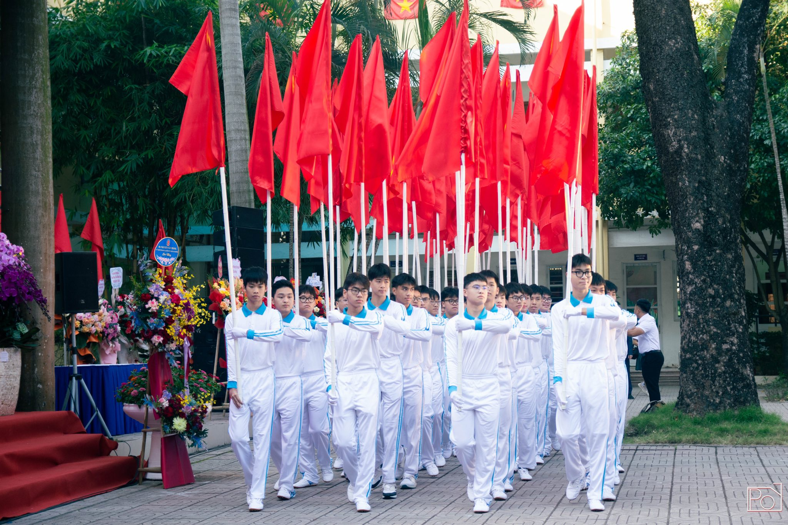
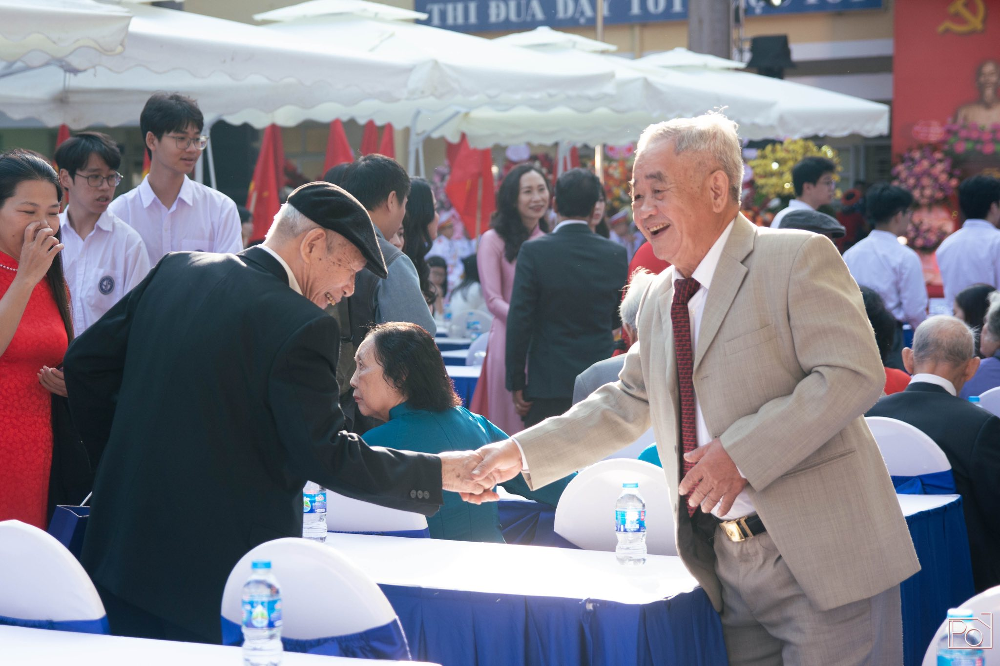
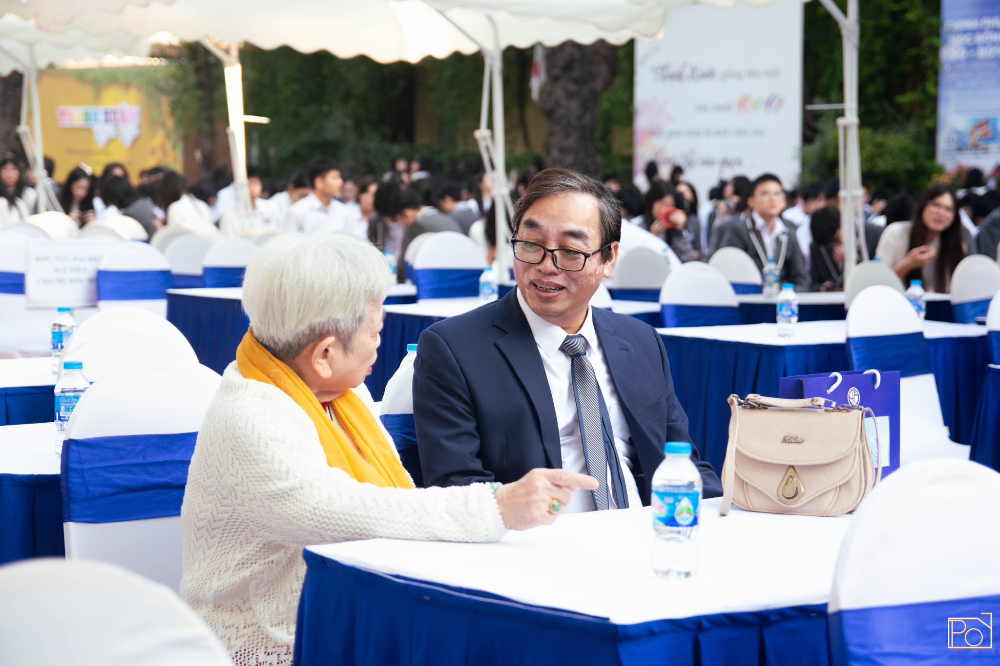

LỄ KỶ NIỆM 65 NĂM THÀNH LẬP THPT YÊN HOÀ
Lễ kỷ niệm 65 năm thành lập THPT Yên Hoà – Hà Nội là dịp để thầy trò, cựu học sinh và những người đã gắn bó với mái trường cùng nhìn lại chặng đường đáng tự hào. Từ ngôi trường làng Cót giản dị năm nào, Yên Hoà hôm nay đã trở thành một trong những môi trường hàng đầu Thủ đô. Trong không khí trang trọng và nhộn nhịp, các hoạt động diễu hành, văn nghệ và tái hiện hành trình lịch sử đã mang đến những cảm xúc vừa bồi hồi, vừa tự hào. Những tấm bằng khen được trao chính là sự ghi nhận cho những đóng góp của các thế hệ nhà giáo và cả những học sinh suốt 65 năm qua. Mỗi khoảnh khắc được ghi lại là một lát cắt của ký ức: tiếng trống vang lên, màu sắc đồng phục trên sân trường, nụ cười hân hoan của bao gương mặt thân quen. Hôm nay là một ngày kỷ niệm trọn vẹn, nơi kết nối quá khứ – hiện tại – tương lai, làm nên tinh thần Yên Hoà không ngừng vươn xa. Còn bây giờ, hãy cùng chúng mình tua lại những thước phim đầy cảm xúc trong lễ kỷ niệm 65 năm thành lập trường THPT Yên Hoà nhé!


